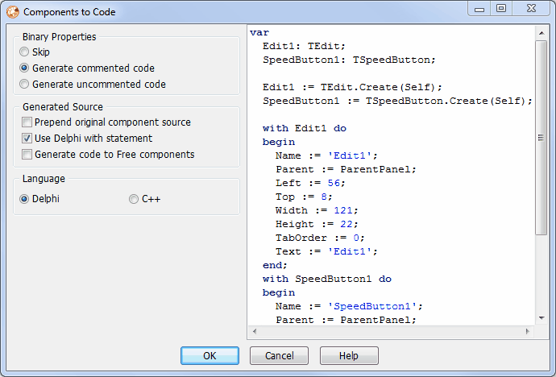

Components to Code |
  
|
Components to Code |
|
This expert allows you to select one or more components on a form and copy the appropriate code to the clipboard that would create those same components at runtime with any modified property settings intact. This expert is also available from the Form designer's context menu.
You can set the following options in the configuration dialog:
•Binary Properties: When encountering binary properties such as bitmaps, the tool can completely skip them, create a comment in the generated code that contains the binary data, or create uncommented code you then manually change to setup your own custom binary data.
•Prepend Original Component Source: Include a copy of the original DFM source so you can later paste it back on a form, if needed.
•Use Delphi With Statement: Use a "with" statement to set each component's properties, when generating Delphi code.
•Generate Code to Free Components: Enable if you want to manually handle memory management by generating the code to free each component and set the component owner to nil/null, rather than making the owner/form automatically free the component by setting the owner to Self/this.
•Language: Choose the target language for the generated code (Delphi or C++).
As you change the options in this dialog, a sample view of the component creation code is updated to reflect your options.

Note: This expert will not work perfectly with some components with subcomponents such as TTeeChart/TDataSet/TTreeView and third party tabsheets that do not descend from TTabSheet, because the sub-components need component-specific code to create or register them with the parent/owner component.